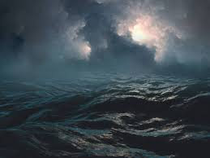
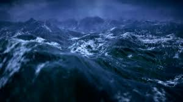

The ocean is often seen as scarier than space because it's a vast, unexplored, yet close environment filled with tangible, active threats like venomous creatures, immense pressure, and sudden storms, unlike space where dangers (vacuum, radiation) are more passive and we're generally protected by advanced tech, making the ocean feel more immediate and primal to the human psyche. In space, danger is expected. You already know it’s hostile. In the ocean, danger hides behind beauty. Calm water can turn violent. Clear water can conceal predators, riptides, drop-offs, and massive unseen depths. It tricks your brain into feeling safe.
Look at the Different Scary Oceans
Space is vast and unknown, but it’s distant. The ocean is an unknown that exists beneath our feet, surrounding our continents, touching our lives. You can accidentally fall into it. You can be swallowed by it in seconds. That closeness makes it feel more real and more threatening.
| Space | Ocean |
|---|---|
| Vast but far | Vast and in our backyard |
| Not an immediant threat | Very much a threat |
| Probably no Aliens | Definite threat |